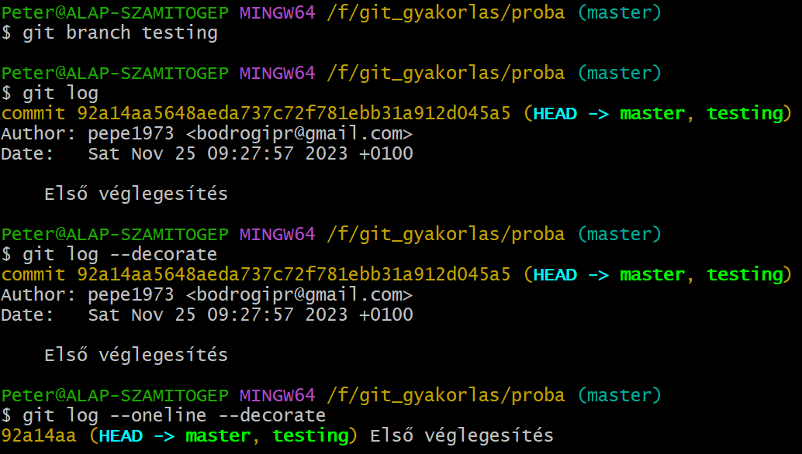

Git és GitHub - Ágkezelés alapok
- Ág (branch): a fő vonaltól (main line) eltérő független fejlesztési vonal.
-
Emlékeztetőként: a Git
mindenegyes véglegesítéskor (commit) létrehoz egy pillanatfelvételt (snapshot) az állományrendszerről, a szerző nevével, e-mail címével
és rövid üzenetével, a korábbi véglegesítésekre utaló
mutatókkal (pointer), és
hozzárendel egy ellenőrző összeget (checksum).
Mindezt egy véglegesítési objektumban (commit object) tárolja el, amely tartalmaz egy mutatót (pointer) erre a pillanatfelvételre.
-
Most részben a Git oldalán lévő
példát
is követjük. Ekkor a következő három állomány került
véglegesítésre:
git add README test.rb LICENSE
git commit -m 'Initial commit'
Véglegesítés után öt objektumom van.- Három blob (binary large object) objektumot, amelyek a három állományt tárolják.
- Egy tree objektumot, amely ezt a három blob-ot.
- És egy commit objektumot, amely erre a tree-re mutat, plusz néhány metadatot tartalmaz.
- Néhány véglegesítéssel később. Látható, hogy megjelent a parent tulajdonság is, amely a közvetlen elődre mutat.
-
A Git-ben az ág (branch) egy
mozgó mutató, amely általában az utolsó pillanatfelvételre
mutat. Alapértelmezetten ez a
master ág. Ezt a Git adja neki,
de bármire át lehet nevezni. Például:
git config --global init.defaultbranch main
-
Hozzunk létre egy új ágat.
git branch testing
- Az utasítás hatására nem lépünk át automatikusan az új ágba!
- Most már két mutatónk (master, testing) van.
- Nézzük meg naplót többféleképpen. 
- Azt, hogy éppen melyik ágban vagyunk a HEAD pointer mutatja.
-
Lépjünk át az új ágba. Ehhez ki kell adni a következő
utasítást.
git checkout testing
- Azt, hogy éppen melyik ágban vagyunk a HEAD pointer mutatja.
- Módosítsuk ebben az ágban a tartalmat egy véglegesítéssel. Naplozzuk ki a két ágat.
- Látható, hogy a két ág teljesen szétvált. A HEAD elem is folyamatosan az adott ágra mutat.
-
git checkout master
-
Az összes ág egyszeri naplózásához a következő utasítás kell
git log --all
- Minden egyes ágváltáskor megváltozik a pillanatfelvételben lévő állományok rendszere (working directory)! Egyes állományok eltűnnek, mások megjelennek!
- Most változtassunk a master ágban.
-
Grafikus formában az ágrajz a következő utasítással kapható
meg.
git log --oneline --decorate --graph --all
-
Hasznos utasítás: ág létrehozása
és átlépés egyszerre.
git checkout -b ujAg
-
Hasznos utasítások:
-
Átváltás ágak között.
git switch master
-
Új ág létrehozása és átváltás ágak.
git switch -c megujabbAg, vagy
git switch --create megujabbAg
-
Visszaugrás az előző ágra.
git switch -
-
Átváltás ágak között.
Ágkezelés - Branching: